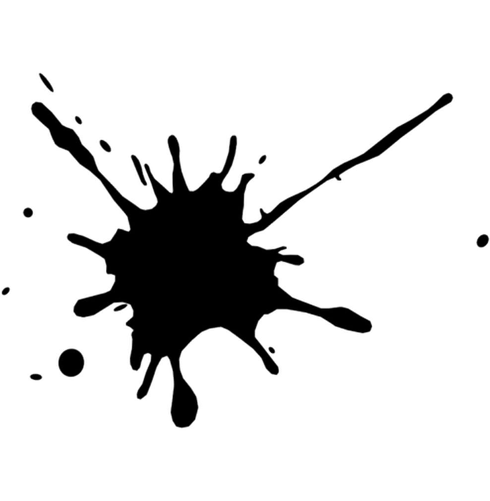

WAT WILDE IK LEREN
Ondanks dat ik nooit veel interesse heb gehad in het zakelijke aspect, was ik nieuwsgierig naar hoe branding en uniek design bijdragen aan een bedrijf. Ik hoopte hier meer inzicht in te krijgen en dit te kunnen toepassen op toekomstige projecten.
.png)
GELEERD?
Tijdens deze aanpak heb ik geleerd hoe belangrijk het is om aannames te valideren en hoe je kunt focussen op de daadwerkelijke behoeften van je doelgroep in plaats van simpele oplossingen te bieden. Het concept van "jobs to be done" heeft me geholpen om te begrijpen dat mensen geen producten kopen, maar een specifiek probleem willen oplossen. Het Value Proposition Canvas bood daarbij hulp pm het in kaart te brengen.
THEO.-
RIE
.png)
Kill your darlings
Flexibel blijven en niet vastzitten aan één idee.
Valideren kun je leren
Hypotheses testen en onderbouwen met data.
Jobs to be done
Functionele, emotionele en sociale jobs identificeren.
Value Proposition Canvas
Jobs, Gains, Gain Creators, Pains en Pain Relievers.
Business Model Canvas
Een visueel overzicht van waardecreatie, connectie behouden en verdienmodellen.
Jung’s Archetypes
Een hulpmiddel voor branding en marketingstrategieën.

METHODEN
We doorliepen verschillende stappen: ideegeneratie, onderzoek, doelgroepanalyse, testen, ontwerpen en itereren door de theorie te gebruiken. Tijdens een Design Sprint stelden we hypotheses op, valideerden en testten we ideeën en trokken we conclusies.
BEROEPS
Door de theorie en methoden te gebruiken kan je een sterke basis leggen voor bijvoorbeeld een startup. het geeft je een goede idee over wat voor bedrijf je wilt, planning geven van de potentiële kosten, marketing strategie en hoe je connecties kan behouden met partners en klanten. Zo wordt de identiteit van de bedrijf compleet.
PRODUCTEN
ONTWIKKELGESPREK
Ik ontdekte dat het mooi is dat ik mijn ideeën naar voren breng, maar dat het belangrijk is anderen ook de ruimte te geven om hun ideeën te delen. Als mensen niet direct reageren(hoe het ook in het team was), moet ik hen altijd vragen over hun mening.
THE
SUBTLE
ART OF
NOT
GIVING
A FUCK

A COUNTERINTUITIVE APPROACH
TO LIVING A GOOD LIFE
MARK MANSON
4
CHAPTER
Inzichten uit het boek
die ik meegenomen heb
Ik koos The Subtle Art of Not Giving a Fck* van Mark Manson omdat het al vier jaar op mijn TBR-lijst stond. Elk jaar dacht ik: dit keer echt, en toch belandde het weer onderaan de stapel. Maar nu, eindelijk, besloot ik er écht voor te gaan.
Het boek confronteerde me op manieren die ik niet had verwacht. In mijn eigen leven maak ik me vaak druk om dingen die ik niet kan veranderen – dingen die niet eens direct met mij te maken hebben, maar met mensen om wie ik geef. Zelfs de kleinste situaties kan ik in mijn hoofd uitvergroten tot een gigantisch drama. Manson legt uit dat je simpelweg niet overal een fuck om kunt geven. Je moet keuzes maken.
Quotes die me raakten
Een quote die echt bleef hangen was:
"It's suspected by many scholars that Shakespeare wrote Romeo and Juliet not to celebrate romance, but rather to satirize it, to show how absolutely nutty it was. He didn't mean for the play to be a glorification of love. In fact, he meant it to be the opposite: a big flashing neon sign blinking KEEP OUT, with police tape around it saying DO NOT CROSS." – pagina 168
Ik hou echt van Shakespeare, en Romeo and Juliet is een van mijn favorieten. Ik had er alleen nooit op deze manier naar gekeken. Het idee dat het geen viering van liefde is, maar juist een waarschuwing, verraste me. En toch, als ik eerlijk ben, zou ik precies zijn zoals Romeo of Juliet – het negeren van dat grote KEEP OUT-bord en alles geven voor mijn geliefden. Dit maakt de andere invalshoek juist zo fascinerend.
Een andere quote die ik sterk vond:
"The deeper the pain, the more helpless we feel against our problems, and the more entitlement we adopt to compensate for those problems." – pagina 55
Dit stuk voelde heel confronterend, vooral het gedeelte over entitlement. Het is iets waar je liever niet aan denkt, maar het is wel logisch. Soms voel je je door je pijn zo machteloos dat je jezelf onbewust belangrijker maakt om het goed te praten. Maar het werkt ook andersom: door te blijven vastzitten in die pijn kun je jezelf voorhouden dat het beter gaat, terwijl je de pijn eigenlijk negeert. Dit kan ervoor zorgen dat je anderen als minder ziet en denkt dat je speciale behandeling verdient.
Wat ik meeneem uit dit boek
"Misschien voelt het egoïstisch, maar het is eigenlijk gewoon gezond."
Als jongste in mijn vriendengroep, en door het verliezen én opnieuw aangaan van vriendschappen en relaties, wist ik eigenlijk altijd al dat ik grenzen moest stellen. Maar het lukte me gewoon niet. Mensen die dichtbij me stonden, disrespecteerden me soms of gebruikten me. Toch bleef ik maar doorgaan zonder 'nee' te zeggen.
In de afgelopen acht maanden kwam alles samen, en op een harde manier leerde ik eindelijk dat grenzen niet optioneel zijn. "Nee" is echt "nee." Het is een les die ik deels door schade en schande heb geleerd, en gelukkig ook groot deels door de juiste mensen in mijn leven.
Over minder stressen? Dat blijft moeilijk. Maar het boek gaf me de motivatie om hier bewuster mee om te gaan.
Ik las het boek midden in de Ondernemende aanpak, en juist toen begon ik het leidinggeven wat los te laten. Ik realiseerde me dat niet alles op mijn schouders hoeft te liggen. Je hoeft niet altijd degene te zijn die alles oplost of het voortouw neemt. Het gaat erom te kiezen wat écht belangrijk is en je daar volledig op te richten.
.png)
.png)
BOUNDARIES
BEREIKT
Tijdens het bedenken en verfijnen van de startup probeerde ik de leiding te nemen. Dit was uitputtend omdat er weinig enthousiasme of betrokkenheid was in de groep, maar ik slaagde erin om de communicatie te verbeteren. Toen we begonnen met coderen, ging het beter. Inmiddels heeft iemand anders de leiding overgenomen, zodat ik me kon opladen.
TROTS
Ik ben trots op mijn doorzettingsvermogen tijdens de start van het project en hoe ik het team ondanks de uitdagingen heb samengebracht. Ook ben ik blij met mijn inzicht in hoe branding en design een bedrijf sterker kunnen maken.
ONDERNEMENDE
AANPAK